Making the cube spin
Lesson 1 ended with a cube that only faces you. Today we turn it around its own up-down line, using two new tools called sin and cos, and then redraw it 60 times a second so it spins. We go slowly: one corner at a time, with every number worked out.
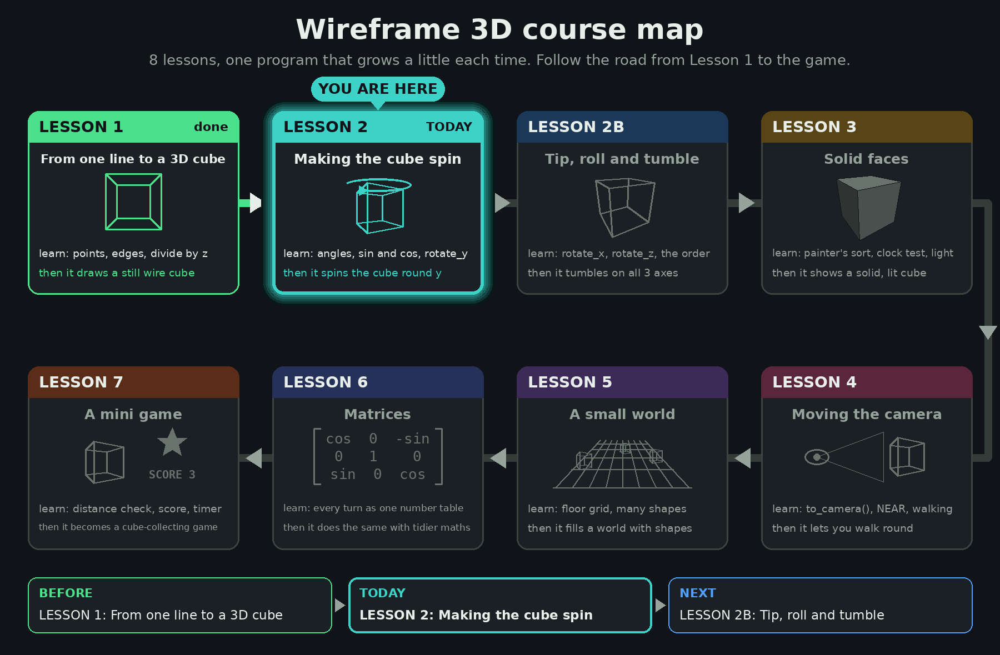
Before: Lesson 1 drew a still wire cube.
Today: the cube turns around one skewer, the upright y axis, using sin and cos.
Next: Lesson 2B, Tip, roll and tumble uses today's rule for the other two skewers.
Today's rotate_y() is used in every later lesson. In Lesson 4 the same function turns the whole world when you turn your head.
Lesson plan
Who it's for: someone who finished Lesson 1 and can run step3_cube.py. No maths beyond times, divide, plus and minus is assumed. Needs: Python 3 and pip install pygame-ce, as before.
By the end, the learner can:
- Say what "turning around the y axis" means, and which of x, y and z change.
- Measure a turn in degrees, and convert it to radians with
math.radians(). - Read cos and sin off a circle of radius 1 as "how far across" and "how far away".
- Use the rotation rule to turn one corner by hand, bracket by bracket.
- Explain why we rotate before moving the cube away, and run a program where the cube spins by itself.
Table 2.0.2Lesson plan: time, part and what happens
| Time | Part | What happens |
|---|---|---|
| 0–3 | Recap | Lesson 1's recipe, and the one new step we add at the front. |
| 3–9 | 1. The spit | Turning around the y axis. Look down from above, so only x and z are left. Q1–Q2. |
| 9–14 | 2. Angles | Degrees, which way is positive, and radians for Python. Q3–Q4. |
| 14–22 | 3. sin and cos | The circle of radius 1. Six worked angles. Run step1_sin_cos.py. Q5–Q6. |
| 22–33 | 4. The rotation rule | Two easy cases, then any corner. Turn corner 5 by 90° and by 30° by hand. Q7–Q9. |
| 33–40 | 5. The whole cube | Corner 5 through all three coordinate systems, then all 8 corners. Why the order matters. Run step2_turn_cube.py. Q10–Q11. |
| 40–45 | 6. Spinning | SPEED, frames, and starting again past 360°. Run step3_spin_cube.py. Q12–Q13. |
| 45–47 | Wrap up | The ideas from today. Final check Q14. Preview of Lesson 2B. |
Recap: one new step 3 MIN
In Lesson 1 every corner of the cube went through the same three steps, every frame: start in SHAPE coordinates (measured from the cube's own centre), add cube_distance to get WORLD coordinates (measured from you), then project() to get SCREEN pixels.
Today we add exactly one step, at the very front: turn the corner while it is still in SHAPE coordinates. Nothing else in Lesson 1's code changes.
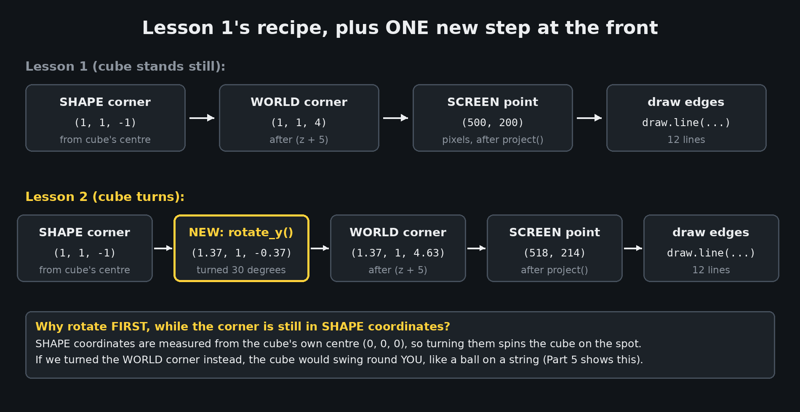
Part 1: Turning around the y axis 6 MIN
Push a skewer straight down through the middle of the cube, from top to bottom, and twirl it. That skewer is the y axis, and the cube turns "around the y axis". It is the turn a person makes looking left and right, or a door on its hinges.
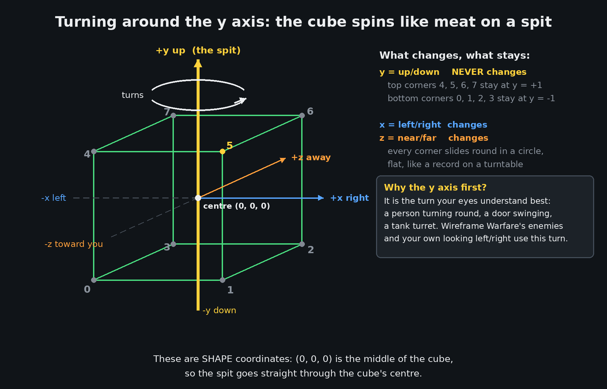
The key fact: when the cube turns on the spit, no corner goes up or down. The top four corners stay at y = +1 and the bottom four stay at y = -1. Only x (left and right) and z (near and far) change.
That gives us a trick. If y never changes, we can ignore it by looking down on the cube from straight above. From up there the cube is just a square, and the y axis points straight up at your eye.
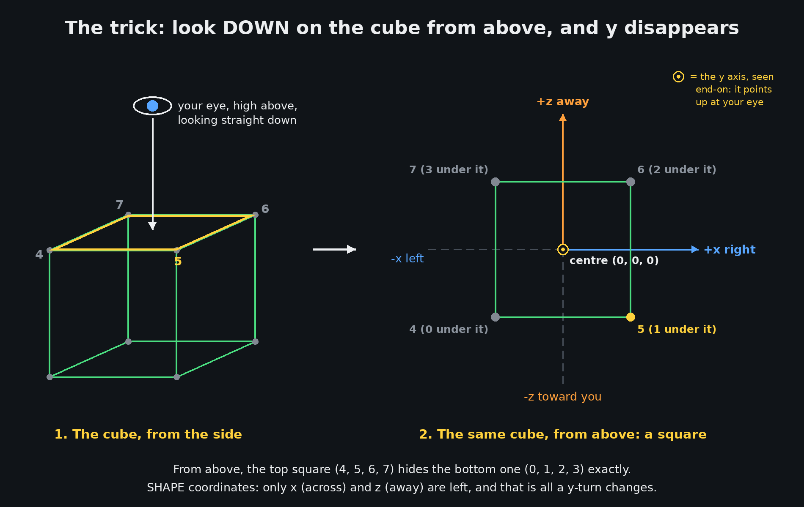
+x is to the right and +z (away from you) is up the page. You sit toward -z, at the bottom of the page. The yellow ring with a dot in the middle is the y axis seen end-on. All of these are SHAPE coordinates, so the centre of the cube is (0, 0, 0).
Q1The cube turns around the y axis. Which of x, y and z can change for a corner, and which can't?
Show answer
Q2Looking down from above, which corner is hidden exactly underneath corner 5?
Show answer
Part 2: Angles 5 MIN
We need a number that says how far the cube has turned. That number is an angle, and in our code it is called angle_degrees.
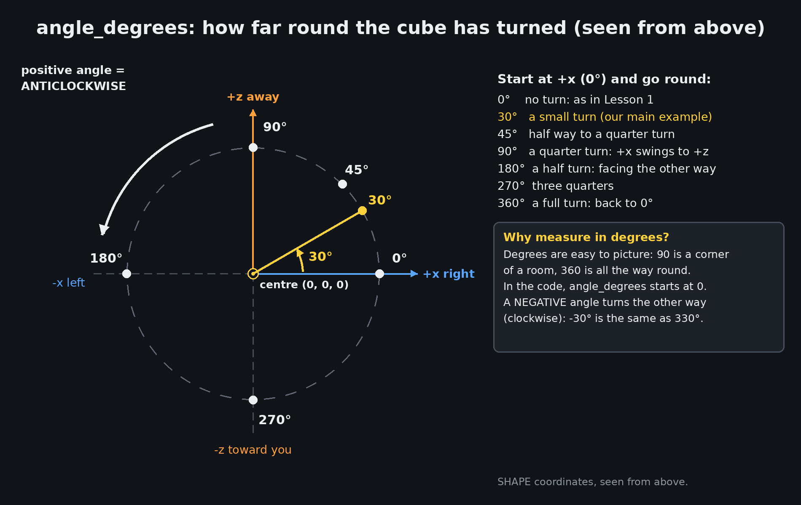
We start with angle_degrees = 0, which is the cube exactly as in Lesson 1. We chose degrees because they are easy to picture: 90 is a quarter turn and 360 is a full turn.
There is one catch. Python's math.sin() and math.cos() don't take degrees. They take radians, another way of measuring the same angle. We keep thinking in degrees and let Python convert at the last moment with math.radians().
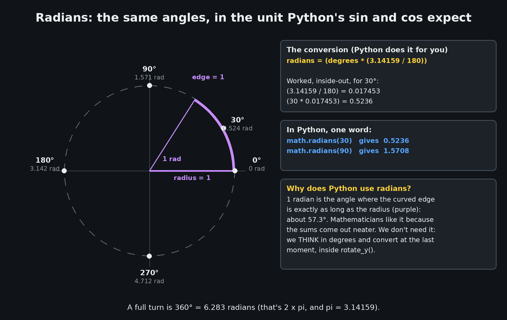
math.radians(30) gives 0.5236, and that is the only place radians appear in our code.Q3How many degrees is a half turn? After a turn of 90°, which way is the point that started on +x pointing?
Show answer
Q4Work out math.radians(180) by hand, using the formula on the diagram (Fig 2.2.2).
Show answer
radians = (180 * (3.14159 / 180))
= (180 * 0.017453)
= 3.14159Part 3: sin and cos 8 MIN
Here is the whole idea of sin and cos in one picture, Fig 2.3.1. Draw a circle with a radius of exactly 1 around the centre. Put a point on the right-hand edge, at (1, 0). Turn it by some angle. Where does it land?
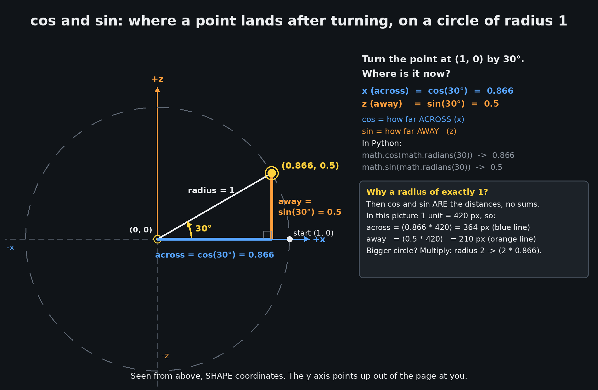
We use a radius of 1 on purpose. With radius 1, cos and sin are the two distances, with no extra sums. In Fig 2.3.1, 1 unit is drawn 420 pixels long, so the blue line is (0.866 * 420) = 364 px and the orange line is (0.5 * 420) = 210 px.
Here are six more angles. Look at each one and check that the blue length matches cos and the orange length matches sin.
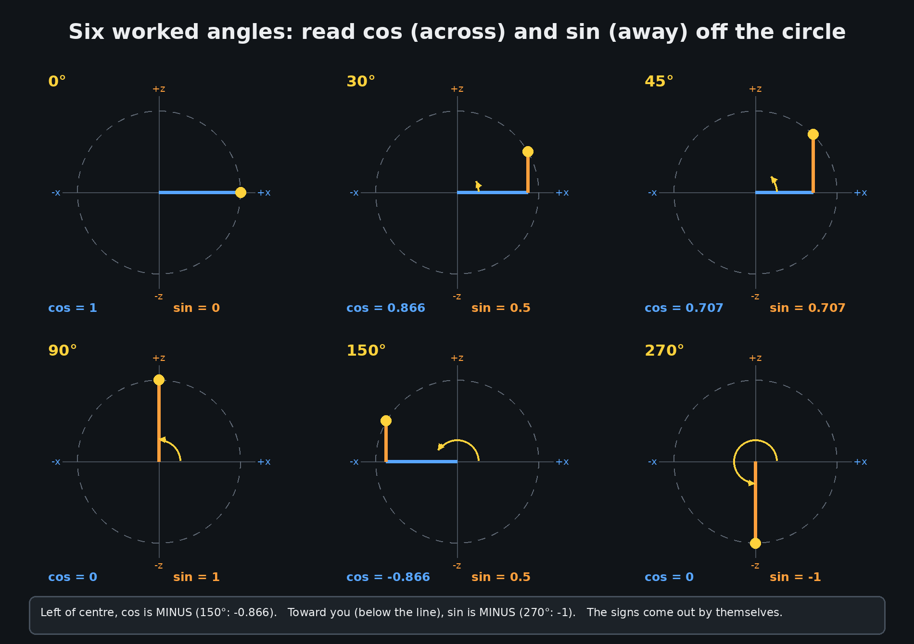
If you walk the point all the way round and plot cos and sin as you go, you get two smooth waves. This is why a spinning corner glides instead of jumping.
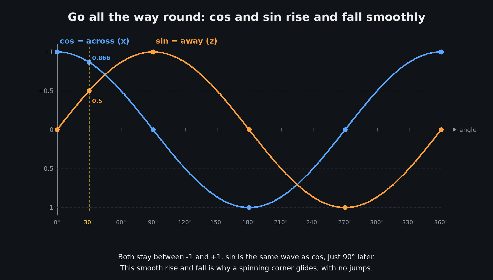
Now check the numbers with Python. step1_sin_cos.py opens no window; it just prints. PART A prints the table for the angles in the diagrams (Fig 2.3.2).
for angle_degrees in [0, 30, 45, 60, 90, 180, 270, 360]:
angle_radians = math.radians(angle_degrees) # degrees -> radians
cos_a = math.cos(angle_radians) # how far ACROSS
sin_a = math.sin(angle_radians) # how far AWAY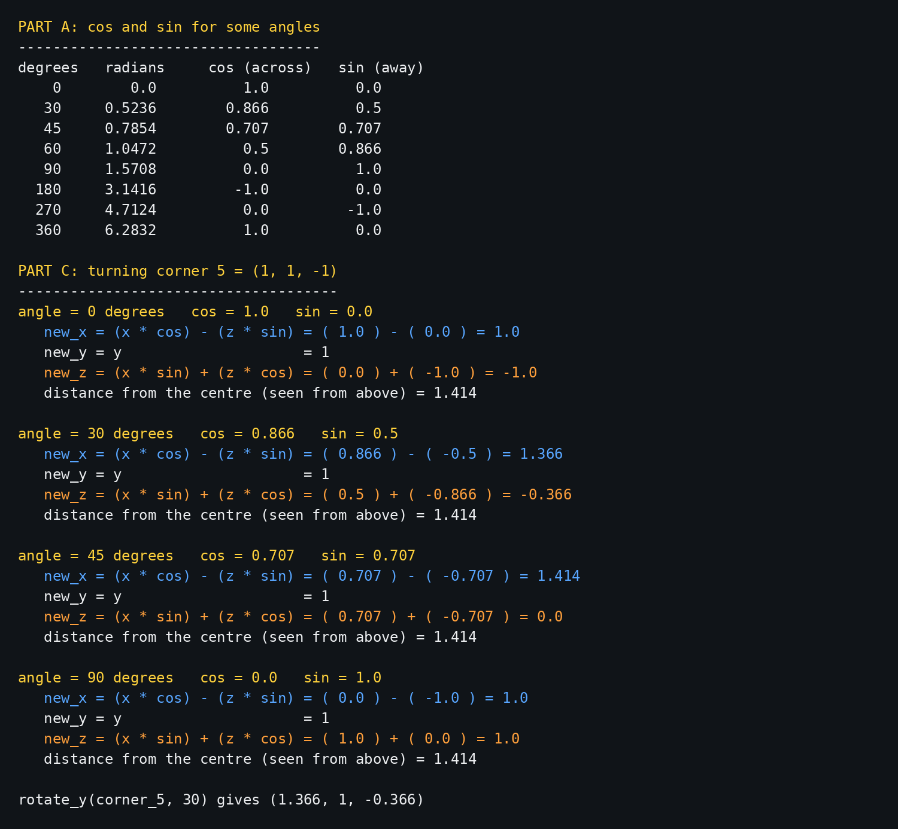
Q5cos(60°) = 0.5 and sin(60°) = 0.866. Where does the point (1, 0) land after turning 60°? Compare it with 30°.
Show answer
Q6What are cos(180°) and sin(180°)? Where does (1, 0) land?
Show answer
Part 4: The rotation rule 11 MIN
A cube corner doesn't usually sit neatly on the +x line, so we build up to it in three steps: a point on +x, a point on +z, then any point made of both.
4.1 Easy case 1: a point on +x
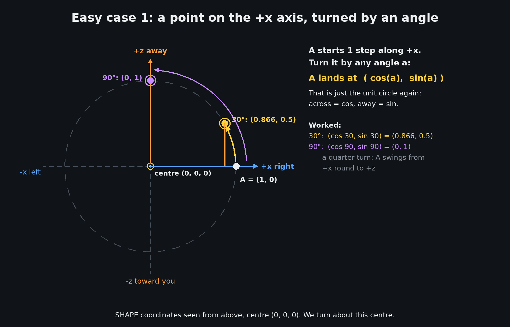
4.2 Easy case 2: a point on +z
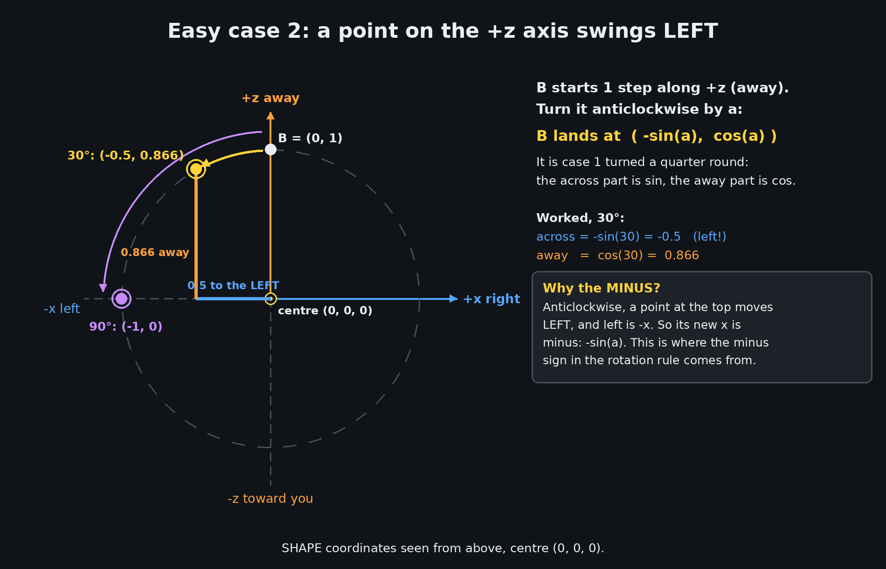
4.3 Any corner: add the two cases together
Any corner, seen from above, is "x steps across, then z steps away". Corner 5 is x = 1 (one step right) and z = -1 (one step toward you). Turn each step on its own, using the two easy cases, then add them up.
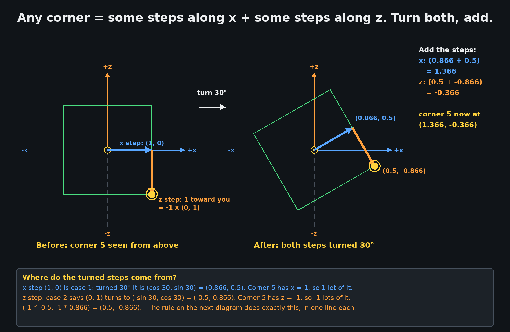
Written as code, that "turn both and add" becomes the rotation rule. Each bracket is one share of one step:
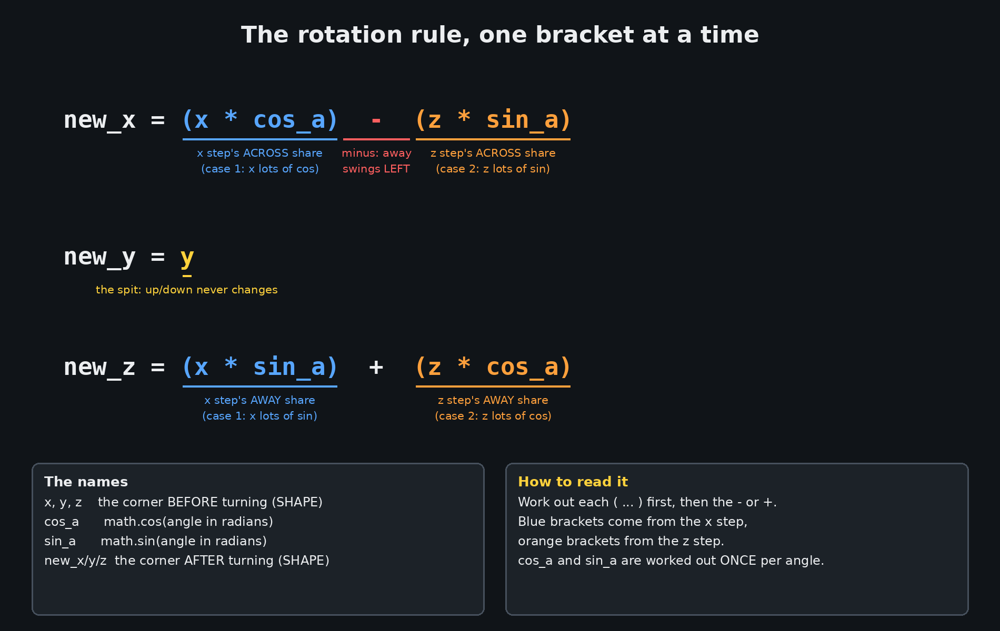
In step2_turn_cube.py and step3_spin_cube.py the rule lives in its own function:
def rotate_y(point_3d, angle_degrees):
x, y, z = point_3d
# Python's sin and cos need RADIANS, so convert first.
angle_radians = math.radians(angle_degrees)
cos_a = math.cos(angle_radians)
sin_a = math.sin(angle_radians)
new_x = (x * cos_a) - (z * sin_a)
new_y = y # up/down never changes
new_z = (x * sin_a) + (z * cos_a)
return (new_x, new_y, new_z)4.4 Worked example 1: corner 5, a quarter turn
90° is a good first test because cos and sin are just 0 and 1, so the answer is easy to check against the picture (Fig 2.4.5).
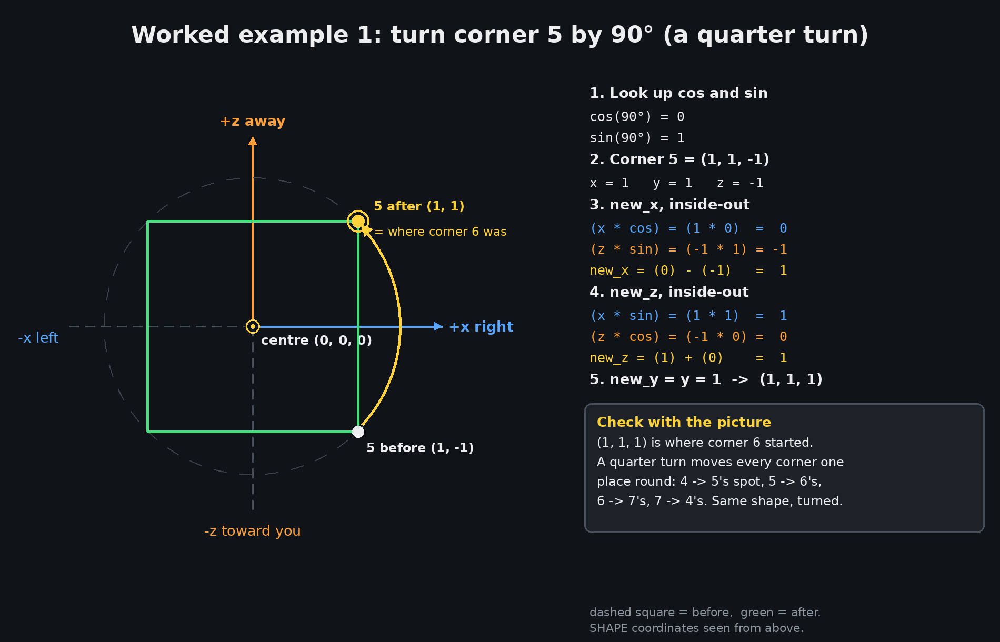
4.5 Worked example 2: corner 5, turned 30°
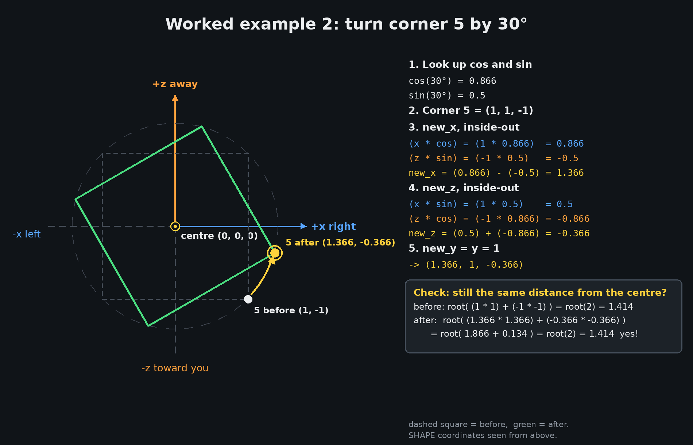
Q7Turn corner 6, (1, 1, 1), by 90°. Where does it land, and whose place is that?
Show answer
cos(90°) = 0, sin(90°) = 1
new_x = (1 * 0) - (1 * 1) = (0) - (1) = -1
new_y = 1
new_z = (1 * 1) + (1 * 0) = (1) + (0) = 1Q8Turn corner 5, (1, 1, -1), by 180°. Where does it land?
Show answer
cos(180°) = -1, sin(180°) = 0
new_x = (1 * -1) - (-1 * 0) = (-1) - (0) = -1
new_y = 1
new_z = (1 * 0) + (-1 * -1) = (0) + (1) = 1Q9Someone types a plus instead of the minus in new_x. What happens to corner 5 at 45° (cos = sin = 0.707)?
Show answer
new_x = (1 * 0.707) + (-1 * 0.707) = (0.707) + (-0.707) = 0
new_z = (1 * 0.707) + (-1 * 0.707) = (0.707) + (-0.707) = 0Part 5: The whole cube 7 MIN
Now put the new step in front of Lesson 1's recipe and follow corner 5 all the way to the screen, at 30°.
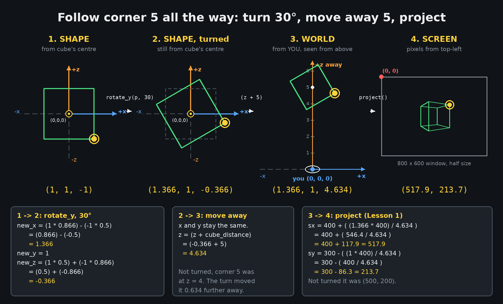
The program does exactly this for all 8 corners, every frame:
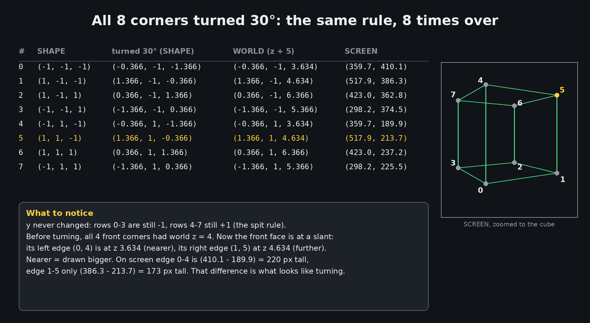
5.1 Why rotate before moving?
rotate_y() always turns around (0, 0, 0). In SHAPE coordinates, (0, 0, 0) is the middle of the cube, so the cube spins on the spot. In WORLD coordinates, (0, 0, 0) is you, so turning there swings the whole cube round you.
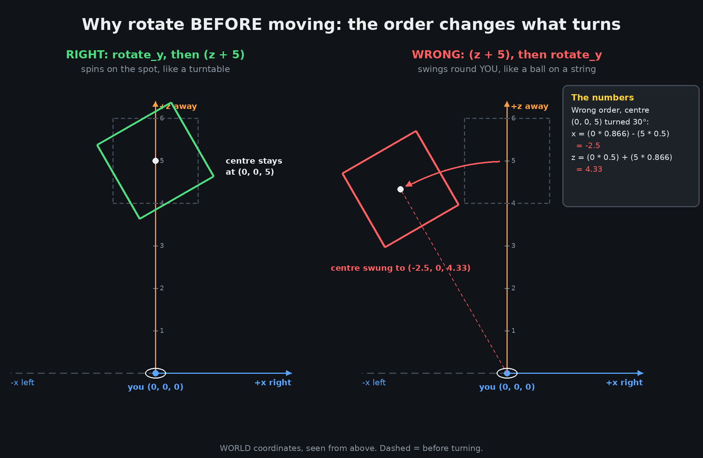
In the code, the order is three lines inside the corner loop:
for p in cube_points:
# 1. ROTATE around the cube's own centre (SHAPE coordinates)
turned = rotate_y(p, angle_degrees)
# 2. MOVE it away from us (WORLD coordinates)
x, y, z = turned
moved = (x, y, (z + cube_distance))
# 3. PROJECT it onto the screen (SCREEN pixels)
screen_points.append(project(moved))Run step2_turn_cube.py. Hold RIGHT to turn the cube and LEFT to turn it back. The little map in the corner shows the same turn from above, like the diagrams, with corner 5 in yellow.
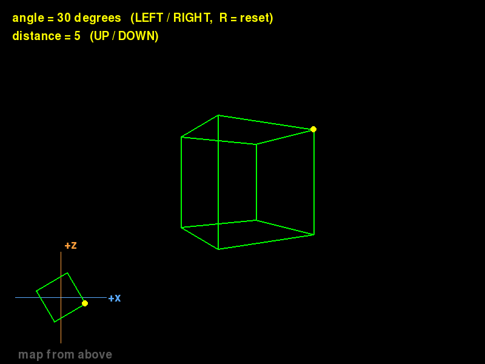
Full code: step2_turn_cube.py (about 200 lines)
# ======================================================================
# LESSON 2 - STEP 2: TURN THE CUBE BY HAND
# ----------------------------------------------------------------------
# Goal: the cube from Lesson 1, but now LEFT / RIGHT arrows turn it
# around its y axis (the up-down line through its middle).
#
# What is new since Lesson 1 (everything else is the same):
#
# 1. import math - for sin, cos and radians
# 2. angle_degrees - how far the cube has turned
# 3. rotate_y(point, angle) - turns ONE point around the y axis
# 4. the corner loop now does: rotate -> move away -> project
# 5. a small "map from above" in the bottom-left corner, so you can
# see the same turning from the top, like the lesson diagrams.
#
# THE ORDER MATTERS:
# rotate first (in SHAPE coordinates, around the cube's own centre),
# THEN add cube_distance (WORLD coordinates),
# THEN project (SCREEN pixels).
# If you moved first and rotated second, the cube would swing round
# YOU instead of spinning on the spot.
#
# Controls: LEFT / RIGHT = turn the cube, UP / DOWN = push away / pull closer
# R = reset the angle to 0
# Run: python step2_turn_cube.py
# ======================================================================
import math
import pygame
pygame.init()
WIDTH = 800
HEIGHT = 600
screen = pygame.display.set_mode((WIDTH, HEIGHT))
pygame.display.set_caption("Lesson 2, step 2 - turn the cube")
clock = pygame.time.Clock()
font = pygame.font.SysFont(None, 28)
BLACK = (0, 0, 0)
GREEN = (0, 255, 0)
YELLOW = (255, 255, 0)
GREY = (90, 90, 90)
BLUE = (90, 170, 255)
ORANGE = (255, 160, 60)
CENTRE_X = (WIDTH / 2) # (800 / 2) = 400
CENTRE_Y = (HEIGHT / 2) # (600 / 2) = 300
FOCAL = 400 # the lens zoom from Lesson 1
# ---- The cube, in SHAPE coordinates (same as Lesson 1) ---------------
cube_points = [
(-1, -1, -1), # 0 bottom-left-front
( 1, -1, -1), # 1 bottom-right-front
( 1, -1, 1), # 2 bottom-right-back
(-1, -1, 1), # 3 bottom-left-back
(-1, 1, -1), # 4 top-left-front
( 1, 1, -1), # 5 top-right-front
( 1, 1, 1), # 6 top-right-back
(-1, 1, 1), # 7 top-left-back
]
cube_edges = [
(0, 1), (1, 2), (2, 3), (3, 0), # bottom square
(4, 5), (5, 6), (6, 7), (7, 4), # top square
(0, 4), (1, 5), (2, 6), (3, 7), # upright edges
]
cube_distance = 5 # how far away the cube's centre is (world z)
# ---- NEW: how far the cube has turned --------------------------------
# Measured in DEGREES, because degrees are easy to picture:
# 0 = facing you as in Lesson 1, 90 = quarter turn, 360 = full turn.
angle_degrees = 0
# How many degrees one frame of holding an arrow key turns the cube.
# 1 degree x 60 frames per second = 60 degrees per second,
# so holding the key for 6 seconds makes one full turn (360).
TURN_STEP = 1
def rotate_y(point_3d, angle_degrees):
"""Turn one (x, y, z) point around the y axis.
The point must be in SHAPE coordinates (from the shape's own centre).
Seen from above, a positive angle turns it ANTICLOCKWISE.
"""
x, y, z = point_3d
# Python's sin and cos need RADIANS, so convert first.
angle_radians = math.radians(angle_degrees)
cos_a = math.cos(angle_radians)
sin_a = math.sin(angle_radians)
new_x = (x * cos_a) - (z * sin_a)
new_y = y # up/down never changes
new_z = (x * sin_a) + (z * cos_a)
return (new_x, new_y, new_z)
def project(point_3d):
"""Turn one 3D WORLD point into a 2D SCREEN point (from Lesson 1)."""
x, y, z = point_3d
screen_x = CENTRE_X + ( (x * FOCAL) / z )
screen_y = CENTRE_Y - ( (y * FOCAL) / z )
return (screen_x, screen_y)
# ---- The little map from above (bottom-left corner) ------------------
# It shows the cube seen from ABOVE, in SHAPE coordinates:
# +x to the right, +z UP the map (away from you), centre (0, 0).
# Each shape unit is drawn MAP_SCALE pixels long.
MAP_X = 100 # map centre on the screen, in pixels
MAP_Y = 490
MAP_SCALE = 30 # 1 shape unit = 30 pixels, so the cube is 60 px wide
def to_map(x, z):
"""Shape (x, z) -> pixel position on the little map."""
map_x = MAP_X + (x * MAP_SCALE)
map_y = MAP_Y - (z * MAP_SCALE) # minus: +z goes UP the map
return (map_x, map_y)
def draw_map(turned_points):
# The axes: x (blue) across, z (orange) up the map.
pygame.draw.line(screen, BLUE, to_map(-2.5, 0), to_map(2.5, 0), 1)
pygame.draw.line(screen, ORANGE, to_map(0, -2.5), to_map(0, 2.5), 1)
screen.blit(font.render("+x", True, BLUE), to_map(2.6, 0.3))
screen.blit(font.render("+z", True, ORANGE), to_map(0.2, 3.2))
# From above, the top square hides the bottom one, so we only need
# the 4 top corners (numbers 4, 5, 6, 7) and the 4 top edges.
for a, b in [(4, 5), (5, 6), (6, 7), (7, 4)]:
xa, ya, za = turned_points[a]
xb, yb, zb = turned_points[b]
pygame.draw.line(screen, GREEN, to_map(xa, za), to_map(xb, zb), 2)
# Corner 5 gets a yellow dot, so you can follow it round.
x5, y5, z5 = turned_points[5]
pygame.draw.circle(screen, YELLOW, to_map(x5, z5), 5)
screen.blit(font.render("map from above", True, GREY), (MAP_X - 70, MAP_Y + 85))
running = True
while running:
for event in pygame.event.get():
if event.type == pygame.QUIT:
running = False
keys = pygame.key.get_pressed()
# ---- NEW: LEFT / RIGHT change the angle --------------------------
if keys[pygame.K_RIGHT]:
angle_degrees = (angle_degrees + TURN_STEP)
if keys[pygame.K_LEFT]:
angle_degrees = (angle_degrees - TURN_STEP)
if keys[pygame.K_r]:
angle_degrees = 0
# Keep the angle between 0 and 359, so the number on screen stays
# readable. 360 degrees is the same as 0 (a full turn).
if angle_degrees >= 360:
angle_degrees = (angle_degrees - 360)
if angle_degrees < 0:
angle_degrees = (angle_degrees + 360)
# ---- UP / DOWN still move the cube, as in Lesson 1 ---------------
if keys[pygame.K_UP]:
cube_distance = (cube_distance + 0.05)
if keys[pygame.K_DOWN]:
cube_distance = (cube_distance - 0.05)
if cube_distance < 3: # corners reach 1.414 from the centre
cube_distance = 3 # when turned, so keep z well above 0
screen.fill(BLACK)
# ---- Work out where every corner goes ----------------------------
turned_points = [] # SHAPE coordinates after turning (for the map)
screen_points = [] # SCREEN pixels (for the cube)
for p in cube_points:
# 1. ROTATE around the cube's own centre (SHAPE coordinates)
turned = rotate_y(p, angle_degrees)
turned_points.append(turned)
# 2. MOVE it away from us (WORLD coordinates)
x, y, z = turned
moved = (x, y, (z + cube_distance))
# 3. PROJECT it onto the screen (SCREEN pixels)
screen_points.append(project(moved))
# ---- Draw the edges (exactly as in Lesson 1) ---------------------
for a, b in cube_edges:
pygame.draw.line(screen, GREEN, screen_points[a], screen_points[b], 2)
# Corner 5 gets a yellow dot here too.
pygame.draw.circle(screen, YELLOW, screen_points[5], 5)
draw_map(turned_points)
text = "angle = " + str(angle_degrees) + " degrees (LEFT / RIGHT, R = reset)"
screen.blit(font.render(text, True, YELLOW), (20, 20))
text2 = "distance = " + str(round(cube_distance, 1)) + " (UP / DOWN)"
screen.blit(font.render(text2, True, YELLOW), (20, 50))
pygame.display.flip()
clock.tick(60)
pygame.quit()
# ----------------------------------------------------------------------
# TRY THIS:
# * Turn to exactly 90 degrees. Corner 5 (yellow) is now where which
# corner was at the start? Check with the lesson's 90-degree diagram.
# * Change TURN_STEP to 5. How long does a full turn take now?
# * In rotate_y, change the minus in new_x to a plus. Turn the cube.
# What goes wrong? (Change it back afterwards!)
# * Swap steps 1 and 2: move first, rotate second. What happens?
# ----------------------------------------------------------------------Q10Follow corner 4, (-1, 1, -1), at 30° all the way to the screen. Check your answer against the table in Fig 2.5.2a.
Show answer
turn: new_x = (-1 * 0.866) - (-1 * 0.5) = (-0.866) - (-0.5) = -0.366
new_z = (-1 * 0.5) + (-1 * 0.866) = (-0.5) + (-0.866) = -1.366
move: z = (-1.366 + 5) = 3.634
project: sx = 400 + ( (-0.366 * 400) / 3.634 ) = 400 + (-40.3) = 359.7
sy = 300 - ( (1 * 400) / 3.634 ) = 300 - 110.1 = 189.9Q11In Lesson 1 the cube could come as close as distance 2. In Lesson 2 the limit is 3. Why might a turning cube need more room?
Show answer
Part 6: Spinning by itself 5 MIN
The main loop already redraws the cube 60 times a second. To make it spin, we add a little to the angle every time round the loop. The amount added each frame is SPEED.
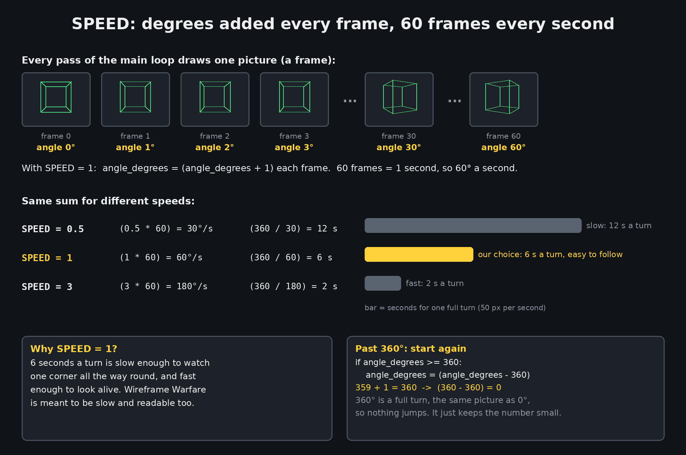
SPEED = 1 # degrees added EVERY FRAME (60 frames a second)
# inside the main loop:
if not paused:
angle_degrees = (angle_degrees + SPEED)
if angle_degrees >= 360: # a full turn is the same
angle_degrees = (angle_degrees - 360) # as no turn: start again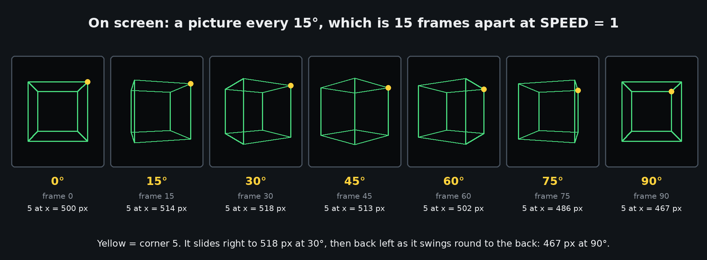
Each frame we turn the original corners by the total angle so far. If we saved the turned corners and turned them again next frame, tiny rounding errors (like 0.8660254 being stored as 0.866025403784) would pile up over thousands of frames and the cube would slowly warp. Keeping the original corners means frame 10,000 is as exact as frame 1.
Run step3_spin_cube.py. SPACE pauses and unpauses, UP and DOWN still change the distance.
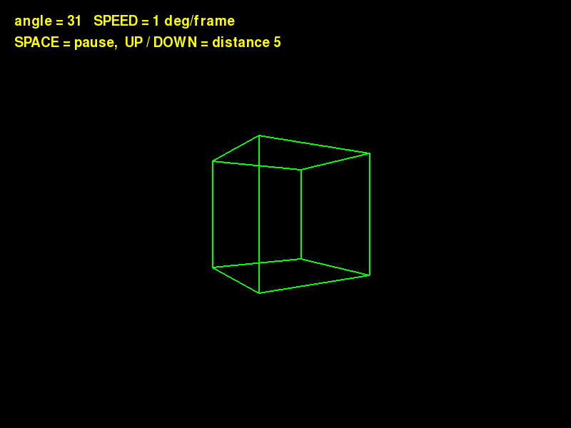
Full code: step3_spin_cube.py (about 150 lines)
# ======================================================================
# LESSON 2 - STEP 3: THE SPINNING CUBE
# ----------------------------------------------------------------------
# Goal: the cube turns BY ITSELF, a little more every frame.
#
# The one new idea:
#
# every frame: angle_degrees = (angle_degrees + SPEED)
#
# The main loop runs 60 times a second (clock.tick(60)). Each time,
# the angle grows by SPEED degrees and we redraw the cube at the new
# angle. 60 slightly-turned pictures a second look like smooth spinning
# - exactly like the frames of a cartoon.
#
# SPEED = 1 degree per frame
# -> (1 * 60) = 60 degrees per second
# -> (360 / 60) = 6 seconds for one full turn: slow and easy to watch.
#
# IMPORTANT: we never change cube_points. Every frame we turn the
# ORIGINAL corners by the TOTAL angle so far. (If we kept turning the
# already-turned corners, tiny rounding errors would pile up and the
# cube would slowly warp out of shape.)
#
# Controls: SPACE = pause / unpause, UP / DOWN = push away / pull closer
# Run: python step3_spin_cube.py
# ======================================================================
import math
import pygame
pygame.init()
WIDTH = 800
HEIGHT = 600
screen = pygame.display.set_mode((WIDTH, HEIGHT))
pygame.display.set_caption("Lesson 2, step 3 - the spinning cube")
clock = pygame.time.Clock()
font = pygame.font.SysFont(None, 28)
BLACK = (0, 0, 0)
GREEN = (0, 255, 0)
YELLOW = (255, 255, 0)
CENTRE_X = (WIDTH / 2) # (800 / 2) = 400
CENTRE_Y = (HEIGHT / 2) # (600 / 2) = 300
FOCAL = 400
# ---- The cube, in SHAPE coordinates (same as Lesson 1) ---------------
cube_points = [
(-1, -1, -1), # 0 bottom-left-front
( 1, -1, -1), # 1 bottom-right-front
( 1, -1, 1), # 2 bottom-right-back
(-1, -1, 1), # 3 bottom-left-back
(-1, 1, -1), # 4 top-left-front
( 1, 1, -1), # 5 top-right-front
( 1, 1, 1), # 6 top-right-back
(-1, 1, 1), # 7 top-left-back
]
cube_edges = [
(0, 1), (1, 2), (2, 3), (3, 0), # bottom square
(4, 5), (5, 6), (6, 7), (7, 4), # top square
(0, 4), (1, 5), (2, 6), (3, 7), # upright edges
]
cube_distance = 5
# ---- The spin --------------------------------------------------------
angle_degrees = 0 # how far the cube has turned so far
SPEED = 1 # degrees added EVERY FRAME (60 frames a second)
paused = False
def rotate_y(point_3d, angle_degrees):
"""Turn one SHAPE point around the y axis (anticlockwise from above)."""
x, y, z = point_3d
angle_radians = math.radians(angle_degrees)
cos_a = math.cos(angle_radians)
sin_a = math.sin(angle_radians)
new_x = (x * cos_a) - (z * sin_a)
new_y = y
new_z = (x * sin_a) + (z * cos_a)
return (new_x, new_y, new_z)
def project(point_3d):
"""Turn one 3D WORLD point into a 2D SCREEN point (from Lesson 1)."""
x, y, z = point_3d
screen_x = CENTRE_X + ( (x * FOCAL) / z )
screen_y = CENTRE_Y - ( (y * FOCAL) / z )
return (screen_x, screen_y)
running = True
while running:
for event in pygame.event.get():
if event.type == pygame.QUIT:
running = False
# SPACE flips paused between True and False (one press = one flip).
if event.type == pygame.KEYDOWN and event.key == pygame.K_SPACE:
paused = not paused
keys = pygame.key.get_pressed()
if keys[pygame.K_UP]:
cube_distance = (cube_distance + 0.05)
if keys[pygame.K_DOWN]:
cube_distance = (cube_distance - 0.05)
if cube_distance < 3:
cube_distance = 3
# ---- NEW: turn a little more every frame -------------------------
if not paused:
angle_degrees = (angle_degrees + SPEED)
if angle_degrees >= 360: # a full turn is the same
angle_degrees = (angle_degrees - 360) # as no turn: start again
screen.fill(BLACK)
# ---- rotate -> move away -> project, for all 8 corners -----------
screen_points = []
for p in cube_points:
turned = rotate_y(p, angle_degrees) # SHAPE, turned
x, y, z = turned
moved = (x, y, (z + cube_distance)) # WORLD
screen_points.append(project(moved)) # SCREEN
for a, b in cube_edges:
pygame.draw.line(screen, GREEN, screen_points[a], screen_points[b], 2)
text = "angle = " + str(angle_degrees) + " SPEED = " + str(SPEED) + " deg/frame"
screen.blit(font.render(text, True, YELLOW), (20, 20))
text2 = "SPACE = pause, UP / DOWN = distance " + str(round(cube_distance, 1))
screen.blit(font.render(text2, True, YELLOW), (20, 50))
pygame.display.flip()
clock.tick(60) # 60 frames a second
pygame.quit()
# ----------------------------------------------------------------------
# TRY THIS:
# * SPEED = 3. How many seconds for one full turn now? (360 / (3 * 60))
# * SPEED = -1. Which way does it spin now?
# * Make TWO cubes: draw the loop twice, the second one with
# ((x + 3), y, (z + cube_distance)) and the angle doubled.
# * Spin the pyramid you made after Lesson 1 instead of the cube.
# ----------------------------------------------------------------------Q12Change SPEED to 2. How many seconds does one full turn take now?
Show answer
degrees per second = (2 * 60) = 120
seconds per turn = (360 / 120) = 3Q13Why does the program turn cube_points by the total angle every frame, instead of turning the previous frame's corners by SPEED?
Show answer
Wrap up 2 MIN
1. Turning around the y axis changes x and z, never y. Look from above to see it.
2. Angles are in degrees in our code; math.radians() converts them for Python.
3. On a circle of radius 1, cos is how far across and sin is how far away.
4. new_x = (x * cos_a) - (z * sin_a) and new_z = (x * sin_a) + (z * cos_a).
5. Rotate first (SHAPE), then move (WORLD), then project (SCREEN).
6. Add SPEED to the angle every frame to make it spin.
Q14Final check: list, in order, everything that happens to one corner of the cube in one frame of step3_spin_cube.py.
Show answer
rotate_y(p, angle_degrees). 3. cube_distance is added to its z, giving WORLD coordinates. 4. project() turns it into SCREEN pixels. 5. The edges are drawn between the screen points.Practice before Lesson 2B
- Spin the pyramid you made after Lesson 1 instead of the cube. Only
cube_pointsandcube_edgeschange. - Set
SPEED = -1. Which way does it spin now, seen from above? - Add two keys that change SPEED while the program runs, for example A for (SPEED - 0.5) and D for (SPEED + 0.5).
- Draw a second cube 3 units to the right,
((x + 3), y, (z + cube_distance)), spinning at twice the angle.
Next time: Lesson 2B, tip, roll and tumble
Today the cube turned around one skewer, the upright y axis. In Lesson 2B we add the other two skewers: tipping around x and rolling around z. The surprise is that both use today's rule with the letters swapped, so there is no new maths. At the end all three turns run together and the cube tumbles.
Files
Download the code for this lesson (right-click a file and choose Save link as):
code/step1_sin_cos.py: prints cos and sin, and turns corner 5 by handcode/step2_turn_cube.py: turn the cube with the arrow keys, with a map from abovecode/step3_spin_cube.py: the cube spins by itselfimages/: every diagram on this page as a PNG- Figure index: every figure and table in the course, with its number. Numbers read
Fig lesson.part.figure, plus a letter for one panel of a picture (for exampleFig 3.4.2b).